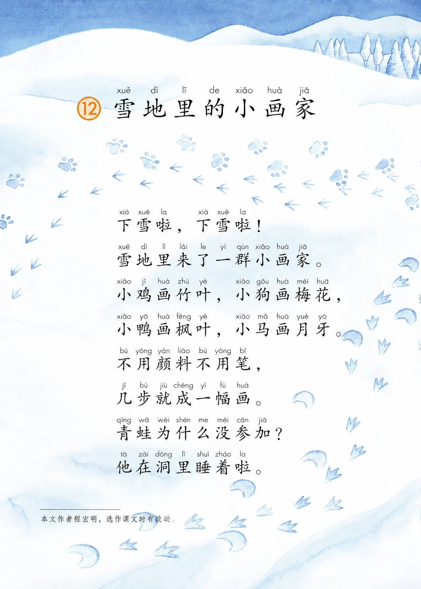

← 返回列表

@肖佑袅 (你)
3 小时前 · 阅读 73
雪地上的小画家这篇课文真的不错
我是一名小学语文老师，昨晚在备课的时候又重温了一下雪地里的小画家这篇课文
真是太有意思了，短短几行写出了人与自然和谐共生 同时又富有童趣
语文书
教师
13
4
分享
评论
4
你
发布
★ 重磅问卷 ★
万众期待 · 不填后悔
★ 历史性时刻 ★
你的意见改变世界
请 填 写 问 卷
你 的 意 见 最 重 要
↓ 点击进入 ↓
📖
成就已解锁
西红柿重度依赖
你看完了西红柿的所有帖子
 ← 返回列表
← 返回列表